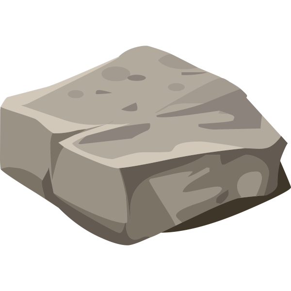
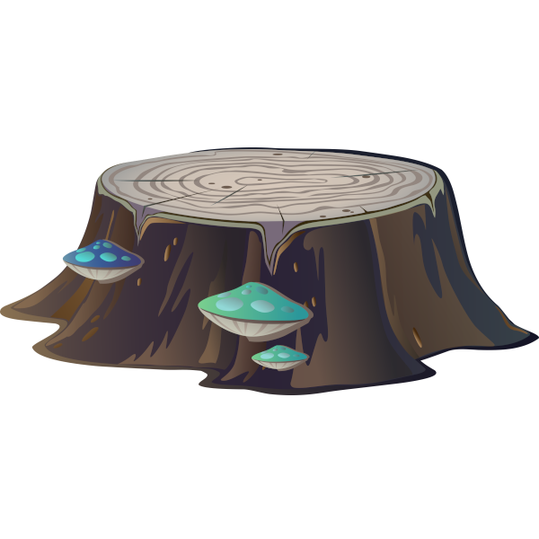

Kara
Hilf dem Marienkäfer Kara sich auf der Wiese zurecht zu finden.
Mit der rechten Maustaste kannst Du Kara auf ein anderes Feld setzen
und mit der linken Taste kannst Du sie drehen.
Klicke mit der linken Taste auf ein Feld um Gegenstände zu plazieren.
-  Der Stein ist ein Hindernis
für Kara
-  Der Baum ist ein Hindernis
für Kara
- Der Pilz kann von Kara
verschoben werden
- Kleeblätter können von
Kara aufgesammelt und fallengelassen werden. Du kannst mehr
Kleeblätter auf ein Feld legen, wenn Du gleichzeitig Strg drückst.
Mit Shift kannst Du Kleeblätter wieder wegnehmen.